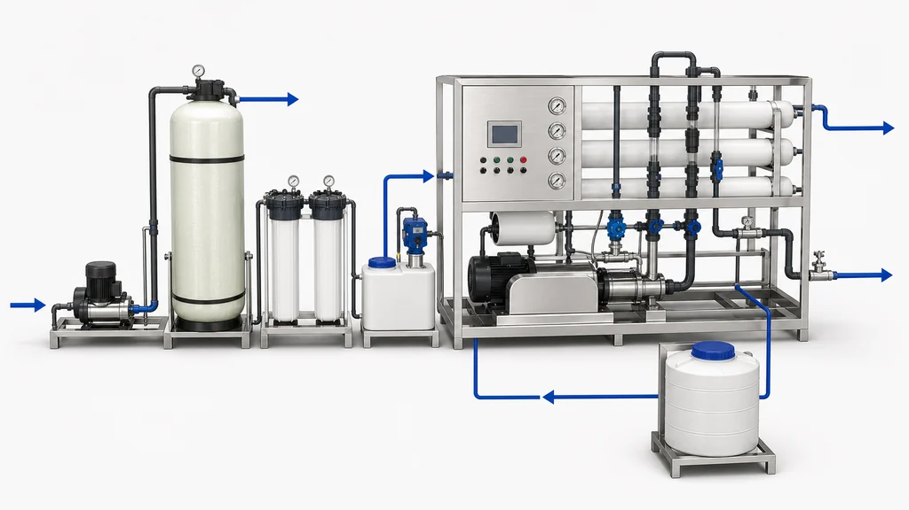
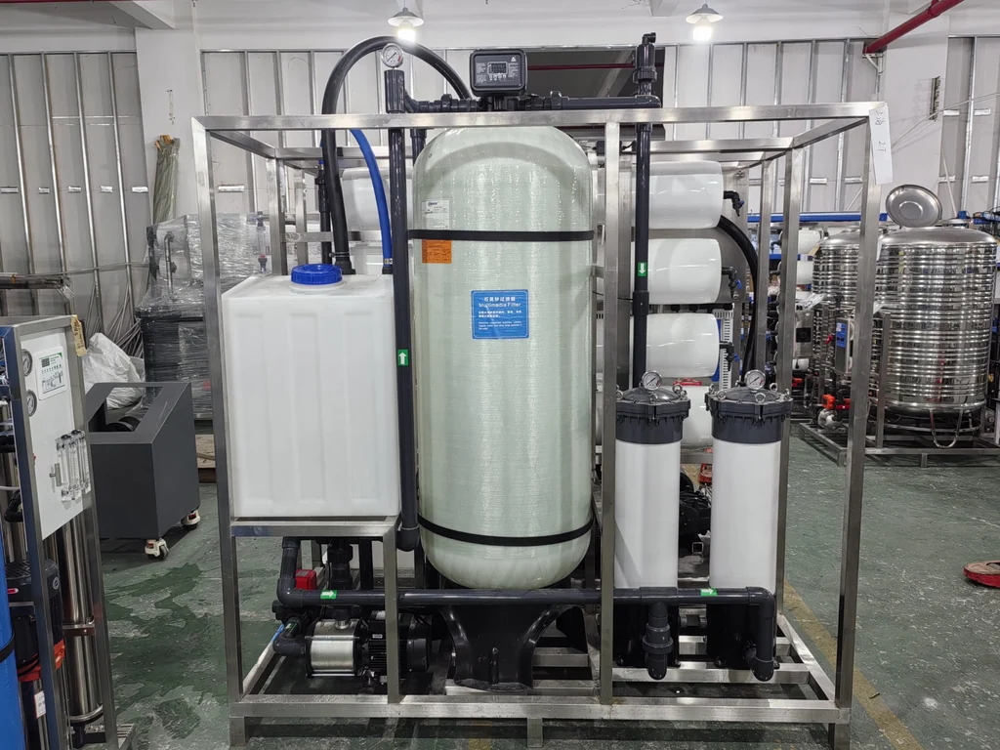

Tehničke specifikacije
- 2,000 L/h (2 m³/h)2,000 L/h (2 m³/h)
- 06 · 8040 · SW8040LE-4004 × Vontron SW8040LE-400 · 5.0 MPa
- 07 · FLEXEM · PLC · CCT3320VFLEXEM · PLC · 11 kW VFD · CCT3320V
- 01 · CMI8-35(T)CMI8-35(T) · SUS316L · 2.2 kW
Direktan odgovor: 2,000 L/h · Sistemi za desalinizaciju morske vode · RO. Morska i bočata voda zahtijevaju drugačije tehničke preglede od obične komunalne vode. Salinitet je važan, ali dizajn takođe zavisi od temperature, suspendovanih čvrstih materija, biološke aktivnosti, bora i drugih jona gde je relevantno, uslova unosa, ciljanog kvaliteta permeata i ograničenja koncentrata. Vontron SW Series materijali pripadaju projektovanom sistemu za desalinizaciju koji uključuje odgovarajuću predtretman, opremu pod pritiskom, opremu za nadzor i čišćenje. Yuchen Water preporučuje kategoriju membrane i opseg podrške za opremu tek nakon što se pregledaju izvještaj o vodi i radni cilj.
| Stavka | Specifikacija |
|---|---|
| 2,000 L/h (2 m³/h) | 2,000 L/h (2 m³/h) |
| 01 · CMI8-35(T) | Lingxiao CMI8-35(T) · SUS316L · 380 V · 50 Hz · 3P · Q=6.0 m³/h · H=48 m · 2.2 kW |
| 02 · 2465 · F134A1 | 2465 FRP ×1 · Runxin F134A1 · ↑/↓ distributor · center tube · 4–8 mm 50 kg · 2–4 mm 250 kg · 1–2 mm 100 kg |
| 03 · 30″ · 5 μm / 1 μm | 30″ × 5 PVC ×2 · 5 μm PP · 1 μm PP |
| 04 · MF101 · 1 L/h | 40 L PE ×1 · MF101 · 1 L/h ×1 |
| 05 · BOTO · 11 kW | Zhejiang BOTO · SUS316L · 90 L/min · 6 MPa · 380 V · 50 Hz · 4P · 11 kW · 3P · Sanjing VFD 11 kW |
| 06 · 8040 · SW8040LE-400 | 80S1000-1 FRP 8040 · 1000 psi ×4 · Vontron SW8040LE-400 ×4 · 5.0 MPa |
| 07 · FLEXEM · PLC · CCT3320V | SUS304 · FLEXEM · PLC · MCB · KM · KA · LED · SA · float ×2 · CCT3320V ×1 · 20 GPM / 30 GPM |
| 08 · −0.5–3 bar / 1–10 MPa | −0.5–3 bar ×1 · 1–10 MPa ×1 · SUS304 0–1 MPa ×2 · 0–10 MPa ×1 |
| 09 · PN16 UPVC · DN40 · DN32 | PN16 UPVC · DN40 HP hose · DN40 UPVC EV ×2 · DN32 SUS316L HP EV ×1 · DN32 SUS316L stop ×1 |
| 10 · 200 L · CIP | 200 L ×1 · fresh-water flush / CIP shared |
Preliminarna rasprava može početi od provodljivosti, temperature i planiranog izlaza, ali konačni odabir materijala zahtijeva potpuniji izvještaj. Nijedan sadržaj stranice ne treba tumačiti kao obećanje performansi lokacije, potrošnje energije, oporavka, vijeka trajanja ili usklađenosti za nepregledani izvor vode.
Lingxiao · Runxin · Zhejiang BOTO · Sanjing · FLEXEM · Vontron. Ovdje navedeni brendovi označavaju samo komponente fotografisane jedinice; ne podrazumijevaju ovlašćenje niti odobrenje.


Shvatite podatke iz izvještaja, pitanja o prethodnoj obradi i opremi koja dolaze prije preporuke za membranu za morsku ili bočatu vodu.
Ne. Temperatura, joni, zamućenost, organska materija, biološki rizik, vrsta unosa i ciljni permeat su takođe potrebni.
Da. Podrška može pokriti smjer predtretmana, kompatibilna kućišta, pumpe, filtraciju, kontrole i daljinsko puštanje u rad.
Ne. Oporavak i drugi rezultati projekta zahtijevaju kompletan izvještaj i inženjerski pregled.
Preliminarna rasprava može početi od provodljivosti, temperature i planiranog izlaza, ali konačni odabir materijala zahtijeva potpuniji izvještaj. Nijedan sadržaj stranice ne treba tumačiti kao obećanje performansi lokacije, potrošnje energije, oporavka, vijeka trajanja ili usklađenosti za nepregledani izvor vode.
Specifikacije mogu varirati u zavisnosti od izabrane konfiguracije. Potvrdite konačne zahtjeve prije ponude.
| Component | Documented configuration |
|---|---|
| Nominal product-water flow | 2,000 L/h (2 m³/h) |
| Raw-water / fresh-water shared pump | Lingxiao CMI8-35(T) · SUS316L · 380 V · 50 Hz · 3P · Q=6.0 m³/h · H=48 m · 2.2 kW |
| Quartz-sand filter | 2465 FRP ×1 · Runxin F134A1 · ↑/↓ distributor · center tube · 4–8 mm 50 kg · 2–4 mm 250 kg · 1–2 mm 100 kg |
| Two-stage security filtration | 30″ × 5 PVC ×2 · 5 μm PP · 1 μm PP |
| Antiscalant dosing | 40 L PE ×1 · MF101 · 1 L/h ×1 |
| High-pressure pump and drive | Zhejiang BOTO · SUS316L · 90 L/min · 6 MPa · 380 V · 50 Hz · 4P · 11 kW · 3P · Sanjing VFD 11 kW |
| 8040 membrane array | 80S1000-1 FRP 8040 · 1000 psi ×4 · Vontron SW8040LE-400 ×4 · 5.0 MPa |
| Control and instrumentation | SUS304 · FLEXEM · PLC · MCB · KM · KA · LED · SA · float ×2 · CCT3320V ×1 · 20 GPM / 30 GPM |
| Pressure monitoring and protection | −0.5–3 bar ×1 · 1–10 MPa ×1 · SUS304 0–1 MPa ×2 · 0–10 MPa ×1 |
| Piping and valves | PN16 UPVC · DN40 HP hose · DN40 UPVC EV ×2 · DN32 SUS316L HP EV ×1 · DN32 SUS316L stop ×1 |
| Fresh-water flushing / CIP shared tank | 200 L ×1 · fresh-water flush / CIP shared |
Industrijska SWRO primjena · Podaci navedeni u projektu
Sažetak slučaja. Elektrana na Bliskom istoku koristi vodu iz Crvenog mora kao izvor za postrojenje za desalinizaciju koje obezbjeđuje dopunsku vodu za kotlove. Projektni materijali dostavljeni za ovaj slučaj opisuju lokaciju sa dva generatorska bloka od 660 MW i četiri jednoprolazna sistema reverzne osmoze morske vode (SWRO).
Opis projekta navodi ukupne rastvorene materije (TDS) u morskoj vodi od približno 36.000 mg/L i povišene koncentracije kalcijuma i magnezijuma. Zbir zasebne jonske analize iznosi 41.169,51 mg/L. U objavljenom VONTRON slučaju navodi se TDS izvorne vode do 41.170,14 mg/L, što je, uz zaokruživanje, u skladu sa zbirom jonske analize; operativna tabela za četiri sistema zasebno prikazuje TDS ulazne vode sistema u rasponu 35.790–36.020 mg/L. Riječ je o različitim mjernim tačkama ili evidencijama. Ne objedinjavati ih bez potvrde datuma uzorkovanja i osnove analize.
Svaki niz je opisan kao konfiguracija sa jednim RO prolazom (single-pass) sa rasporedom membrana 20 × 7, projektovanim protokom permeata od najmanje 80 m³/h i navedenim stepenom iskorišćenja od najmanje 43%. Prijavljeni proces obuhvata koagulaciju i taloženje, multimedijalnu filtraciju, aktivni ugalj, rezervoar i pumpu napojne vode, sigurnosnu filtersku patronu, pumpu visokog pritiska, SWRO stepen, rezervoar permeata, drugi RO stepen, jonsku izmjenu i dopunsku vodu za kotlove.
Projektne informacije koje je potvrdio korisnik navode da su od 2019. u Nizu 1 ugrađeni elementi VONTRON SW8040HR-400. VONTRON-ov objavljeni slučaj elektrane u Saudijskoj Arabiji nezavisno navodi četiri niza za desalinizaciju morske vode, po 140 elemenata SW8040HR-400 u svakom, kao i puštanje u rad 2019. godine. Ovaj slučaj se razlikuje od konfiguracije opreme od 2.000 L/h prikazane u drugom dijelu ove stranice proizvoda, gdje su navedena četiri elementa SW8040LE-400.
Zahvat vode iz Crvenog mora Koagulacija i taloženje Multimedijalna filtracija Aktivni ugalj Rezervoar i pumpa napojne vode Sigurnosna filtracija patronom Pumpa visokog pritiska SWRO sa jednim RO prolazom SWRO sa elementima SW8040HR-400 Rezervoar permeata Drugi RO stepen Jonska izmjena Dopunska voda za kotlove
Dostavljena uporedna tabela prikazuje presjek rada Sistema 1 na 31,1 °C: protok napojne vode 188,2 m³/h, protok permeata 81,2 m³/h, iskorišćenje 43,1%, TDS napojne vode 36.020 mg/L, TDS permeata 228,8 mg/L, TDS koncentrata 64.340 mg/L i odbacivanje soli 99,36%. Prateći tekst zasebno navodi početno odbacivanje soli od 99,3% i proizvodnju 10% iznad projektovane vrijednosti. To su različiti konteksti izvještavanja; vrijednosti treba držati odvojeno dok vlasnik projekta ne potvrdi datume mjerenja i definicije.
| Sistem | Temperatura (°C) | Pritisak napojne vode (MPa) | Pritisak koncentrata (MPa) | Pad pritiska (MPa) | Protok napojne vode (m³/h) | Protok permeata (m³/h) | Iskorišćenje (%) | TDS napojne vode (mg/L) | TDS permeata (mg/L) | TDS koncentrata (mg/L) | Odbacivanje soli (%) | Oznaka dobavljača u izvoru |
|---|---|---|---|---|---|---|---|---|---|---|---|---|
| 1 | 31.1 | 6.155 | 6.034 | 0.121 | 188.2 | 81.2 | 43.1 | 36,020 | 228.8 | 64,340 | 99.36 | VONTRON |
| 2 | 31.3 | 6.094 | 5.826 | 0.268 | 182.1 | 75.72 | 41.6 | 35,890 | 273.3 | 62,000 | 99.24 | Brand A |
| 3 | 31.4 | 6.123 | 5.962 | 0.161 | 174.7 | 69.75 | 39.9 | 35,810 | 349.6 | 57,340 | 99.02 | Brand B |
| 4 | 30.9 | 6.250 | 6.064 | 0.186 | 184.1 | 79.0 | 42.9 | 35,790 | 841.6 | 62,340 | 97.65 | Brand A |
| Sastojak | Prijavljena koncentracija (mg/L) |
|---|---|
| Kalcijum (Ca²⁺) | 436.69 |
| Magnezijum (Mg²⁺) | 1,432.36 |
| Natrijum (Na⁺) | 12,878.02 |
| Kalijum (K⁺) | 362.36 |
| Barijum (Ba²⁺) | 0.00 |
| Stroncijum (Sr²⁺) | 0.00 |
| Bor (B) | 6.80 |
| Bikarbonat (HCO₃⁻) | 144.04 |
| Karbonat (CO₃²⁻) | 7.53 |
| Sulfat (SO₄²⁻) | 3,311.58 |
| Hlorid (Cl⁻) | 22,588.58 |
| Fluorid (F⁻) | 1.26 |
| Nitrat (NO₃⁻) | 0.00 |
| Silicijum-dioksid (SiO₂) | 0.29 |
VONTRON-ov objavljeni slučaj navodi stepen desalinizacije sistema od 99,36% i kaže da su proizvodnja i učinak desalinizacije ispunjavali projektovane vrijednosti i ostali stabilni tokom rada. Evidencija koju je dostavio korisnik zasebno navodi da je dnevno desalinizovano gotovo 2.000 m³ morske vode, te da su protok permeata i odbacivanje soli ostali stabilni duže od dvije godine u dokumentovanom periodu rada. Trajanje se odnosi na istorijski period i ne znači da sistem trenutno radi.


Osnovni identitet projekta, proizvođač i model, godina puštanja u rad, projektni kriterijumi i rezultat sistema od 99,36% upoređeni su sa VONTRON-ovim objavljenim slučajem elektrane. Detaljni operativni redovi za četiri sistema, jonska analiza, početnih 99,3%, proizvodnja 10% iznad projekta, dnevna zapremina i trajanje duže od dvije godine potiču iz materijala korisnika; Yuchen Water nije nezavisno provjerio te detalje. Korisnik je potvrdio dozvolu za objavu 23. oktobra 2026.